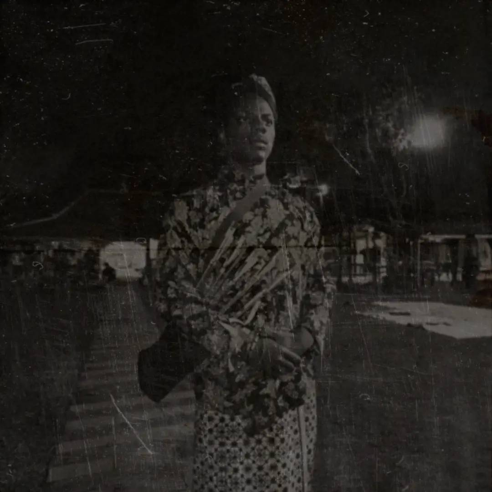
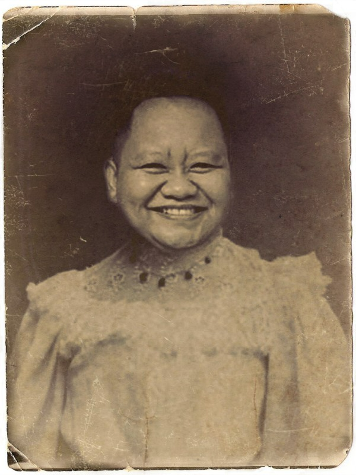

Cari Tahu Siapa Nenek Moyang Kamu
Masukin Nama Kamu:
Cari Tahu
Sedang mencari nenek moyang Anda...
Nenek Moyang Paling Langka
1. Windah Habattusauda - Rarity: Very High (2%)

2. Raden Watkins - Rarity: Medium (30%)

3. Nona Gem - Rarity: Medium (30%)
Dukung atmin via saweria
Follow Ridzverse